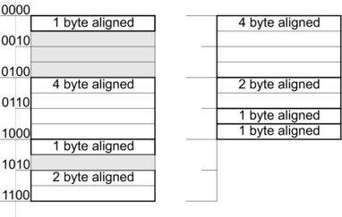

To avoid alignment gaps between modules, the default sections are divided depending on the alignment.
The Listing 14.1 illustrates the behaviour of data alignment without and with the option -maligned-data-sections.

| Figure 14.1: Comparison of aligned data |
The alignment of data is considered for its addressing. Therefore an address of 4-byte of aligned data is a multiple of ”4” (0000b, 0100b, 1000b, 1100b ...). On the left hand side of the Listing 14.1 1-byte of aligned data is followed by 4-byte of aligned data. The result is a gap of 3 bytes. For 2-byte of aligned data it is a gap of 1 byte.
By means of -maligned-data-sections, data can be sorted without having gaps. A multiple of 1-byte alignment is a 2-byte alignment. A multiple of 2-byte alignment is a 4-byte alignment. If data are sorted in descending order depending on their alignment, gaps will be avoided. This can be seen on the right hand side of Listing 14.1.
The alignment of uninitialised variables in .bss section.
uninitialised 1-byte variable
uninitialised 2-byte variable
uninitialised 4-byte variable
uninitialised variable ³ 8-byte
The alignment of initialised variables in .data section.
initialised 1-byte variable
initialised 2-byte variable
initialised 4-byte variable
initialised variable ³ 8-byte
The alignment of constants in .rodata section.
1-byte constants
2-byte constants
4-byte constants
constants ³ 8 byte
This mechanism is not used for the following sections:
code section
section for uninitialised bit variables
section for initialised bit variables